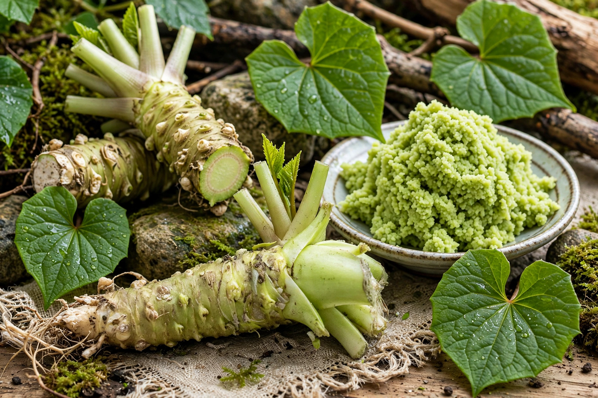

From Wikipedia, the free encyclopedia
| Wasabi | |
|---|---|
 | |
| Kingdom | Plantae |
| Order | Brassicales |
| Family | Brassicaceae |
| Genus | Eutrema |
| Species | E. japonicum |
| Binomial name | Eutrema japonicum (Miq.) Koidz. |
Wasabi (ワサビ, わさび, or 山葵, pronounced [waꜜsabi]) or Japanese horseradish (Eutrema japonicum, syn. Wasabia japonica) is a plant of the family Brassicaceae, which also includes horseradish and mustard. A paste made from its ground rhizomes is used as a pungent condiment for sushi and other foods. It is similar in taste to hot mustard or horseradish rather than chili peppers, in that it stimulates the nose more than the tongue.
The plant grows naturally along stream beds in mountain river valleys in Japan. The two main cultivars in the marketplace are E. japonicum 'Daruma' and 'Mazuma', but there are many others. The oldest record of wasabi as a food dates back to the 8th century CE. The popularity of wasabi in English-speaking countries has coincided with that of sushi, growing steadily starting in about 1980.
Few places are suitable for large-scale wasabi cultivation, and cultivation is difficult even in ideal conditions. In Japan, wasabi is cultivated mainly in the Izu Peninsula, Nagano Prefecture, Shimane Prefecture, Yamanashi Prefecture, Iwate Prefecture, and Shizuoka Prefecture. Because the wasabi plant is so particular about its environment — clean, cold running water between roughly 8 and 20 °C, shade, and rocky or gravelly soil — genuine wasabi is comparatively rare and expensive outside Japan.
Wasabi is traditionally grated with a metal oroshigane, but more traditionally with a dried sharkskin grater, which produces a finer paste. The flavour dissipates quickly, so sushi chefs usually put the wasabi between the fish and the rice. Fresh wasabi leaves can also be eaten, having the spicy flavour of wasabi rhizomes.
Because of the high cost of real wasabi, most "wasabi" sold in Western supermarkets and restaurants is a mixture of horseradish, mustard, starch and green food colouring. In Japan this substitute is called seiyō wasabi ("Western wasabi").
The pungency of wasabi comes from allyl isothiocyanate, produced when the grated rhizome's cells are ruptured and the enzyme myrosinase acts on glucosinolates. The volatile compounds evaporate quickly, which is why freshly grated wasabi loses its bite within 15–20 minutes.
See also: Horseradish · Sushi · Japanese cuisine